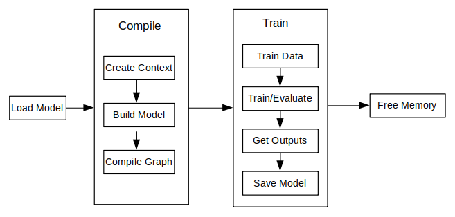

Using C++ Interface to Perform Training

Overview
The principal procedures of lite training is as follows:
Design the network and export the
MindIRmodel file by using the cloud side APIs.Transfer the
MindIRfile to .ms model file.Train, evaluate and save
msmodel files.
The model structure is saved in the transferred
msmodel file which will be load to the device platform for training.
The following figure shows the detailed training process:

For the detailed C++ API description, refer to API document.
Model Creating Loading and Building
Model is the main entrance of the MindSpore Lite framework. We can compile and execute graph models through Model class.
Reading Models
A Model file is flatbuffer-serialized file which was converted using the MindSpore Model Converter Tool. These files have a .ms extension. Before model training or inference, the model needs to be loaded from the file system and parsed. Related operations are mainly implemented in the Serialization class which holds the model data such as the network structure, weights data and operators attributes.
Creating Contexts
Context is a MindSpore Lite Object which contains basic configuration parameters required by the sessions to guide graph compilation and execution. It allows to define the device to run the model, e.g., CPU or GPU, the number of threads used for training and inference and the memory allocation scheme.
Currently, only single threaded CPU device is supported by TrainSession.
Once the Model is created with the Context object, it is no longer needed and can be deleted.
Creating TrainLoop
User can create the object of the class Model by using the function Build to call MindData APIs. The member function Build of the class Model whose prototype is as follows:
Status Build(GraphCell graph, const std::shared_ptr<Context> &model_context = nullptr, const std::shared_ptr<TrainCfg> &train_cfg = nullptr);
The following codes show ho to create a training session based on the multi-threads CPU by using the class Model.
int CreateSession() {
auto context = std::make_shared<mindspore::Context>();
auto cpu_context = std::make_shared<mindspore::CPUDeviceInfo>();
cpu_context->SetEnableFP16(enable_fp16_);
context->MutableDeviceInfo().push_back(cpu_context);
graph_ = new mindspore::Graph();
auto status = mindspore::Serialization::Load(ms_file_, mindspore::kFlatBuffer, graph_);
if (status != mindspore::kSuccess) {
std::cout << "Error " << status << " during serialization of graph " << ms_file_;
MS_ASSERT(status != mindspore::kSuccess);
}
auto cfg = std::make_shared<mindspore::TrainCfg>();
if (enable_fp16_) {
cfg.get()->optimization_level_ = mindspore::kO2;
}
model_ = new mindspore::Model();
status = model_->Build(mindspore::GraphCell(*graph_), context, cfg);
if (status != mindspore::kSuccess) {
std::cout << "Error " << status << " during build of model " << ms_file_;
MS_ASSERT(status != mindspore::kSuccess);
}
return;
}
Refer to Train a LeNet for more details.
Data Processing
Data Reading Pipeline
The class Dataset and its extension class (e.g., MnistDataset and AlbumDataset) have provided abundant data procssing API. Users only need to specify the dataset path and set the data processing operations for the model training by using the shared pointers from the related API. Reading pipeline will decode and load dataset during model training. Refer to Dataset for more detials.
Data Preprocessing Pipeline
The class TensorTransform has provided abundant data preprocssing API and has the same function as the cloud side, (e.g., Dimension reshaping, data type casting and one-hot coding). The users only need to create the objects of the extension classes of TensorTransform and transfer them to the function Map. Refer to Vision for more detials.
Example
The following codes show how to read and process dataset by using the class Dataset and TensorTransform:
int DataSetPipeline() {
train_ds_ = Mnist(data_dir_ + "/train", "all", std::make_shared<SequentialSampler>(0, 0));
TypeCast typecast_f(mindspore::DataType::kNumberTypeFloat32);
Resize resize({h_, w_});
train_ds_ = train_ds_->Map({&resize, &typecast_f}, {"image"});
TypeCast typecast(mindspore::DataType::kNumberTypeInt32);
train_ds_ = train_ds_->Map({&typecast}, {"label"});
train_ds_ = train_ds_->Batch(batch_size_, true);
if (verbose_) {
std::cout << "DatasetSize is " << train_ds_->GetDatasetSize() << std::endl;
}
if (train_ds_->GetDatasetSize() == 0) {
std::cout << "No relevant data was found in " << data_dir_ << std::endl;
MS_ASSERT(train_ds_->GetDatasetSize() != 0);
}
return 0;
}
The example allows the user to define the training data processing flow by calling existing functions of the Dataset class and the TensorTransform class via the shared pointer of the MnistDataset class returned by the Mnist function.
Executing Training
MindSpore has provided some off-the-shelf callback classes for users (e.g., AccuracyMetrics, CkptSaver, TrainAccuracy, LossMonitor and Metrics). The function Train and Evaluate of the class Model can set the model to the training or evaluation mode separately, specify the methods of the data processing and monitor the session status.
Training
Create the objects of the off-the-shelf functions and call the Train function of the class Model to training:
int Train() {
mindspore::LossMonitor lm(kPrintTimes);
mindspore::TrainAccuracy am(1);
mindspore::CkptSaver cs(kSaveEpochs, std::string("lenet"));
Rescaler rescale(kScalePoint);
Measurement measure(epochs_);
if (virtual_batch_ > 0) {
model_->Train(epochs_, train_ds_, {&rescale, &lm, &cs, &measure});
} else {
struct mindspore::StepLRLambda step_lr_lambda(1, kGammaFactor);
mindspore::LRScheduler step_lr_sched(mindspore::StepLRLambda, static_cast<void *>(&step_lr_lambda), 1);
model_->Train(epochs_, train_ds_, {&rescale, &lm, &cs, &am, &step_lr_sched, &measure});
}
return 0;
}
Evaluating
Also call the Evaluate function of the class Model to evaluate model.
float Evaluate() {
test_ds_ = Mnist(data_dir_ + "/test", "all");
TypeCast typecast_f(mindspore::DataType::kNumberTypeFloat32);
Resize resize({h_, w_});
test_ds_ = test_ds_->Map({&resize, &typecast_f}, {"image"});
TypeCast typecast(mindspore::DataType::kNumberTypeInt32);
test_ds_ = test_ds_->Map({&typecast}, {"label"});
test_ds_ = test_ds_->Batch(batch_size_, true);
model_->Evaluate(test_ds_, {});
std::cout << "Accuracy is " << acc_metrics_->Eval() << std::endl;
return 0.0;
}
With TrainSessions, a network can be used for both inference and training. These two modes differ in several aspects:
The input of the network: Running inference requires only the data, while running training requires both data and labels.
The output of the network: Running inference returns the predicted values in the output, while running in training mode returns the loss.
In training mode, the weights of the layers are updated in each Run, while in inference mode they are static.
Some layers behave differently in inference vs. training mode, e.g., updating the accumulated batch mean and variance in Batch Normalization layers.
Others
Session Mode Switching
The function prototypes for Train and Evaluate in the Model class are as follows:
/// \brief Set model to train mode
/// \return STATUS as an error code of compiling graph, STATUS is defined in errorcode.h
Status Train(int epochs, std::shared_ptr<dataset::Dataset> ds, std::vector<TrainCallBack *> cbs);
/// \brief Set model to Evaluate mode
/// \return STATUS as an error code of compiling graph, STATUS is defined in errorcode.h
Status Evaluate(std::shared_ptr<dataset::Dataset> ds, std::vector<TrainCallBack *> cbs);
The following sample code shows how to set a Model object to train mode.
auto ret = model->Train();
if (ret != RET_OK) {
std::cerr << "Could not set to train mode" << std::endl;
return -1;
}
auto ret = model->Evaluate();
if (ret != RET_OK) {
std::cerr << "Could not set to evaluate mode" << std::endl;
return -1;
}
Resizing the Input Dimension
When MindSpore Lite is used for inference, if the input shape needs to be resized, you can call the Resize API of Model to resize the shape of the input tensor after a model is created and built.
Some networks do not support variable dimensions. As a result, an error message is displayed and the model exits unexpectedly. For example, the model contains the MatMul operator, one input tensor of the MatMul operator is the weight, and the other input tensor is the input. If a variable dimension API is called, the input tensor does not match the shape of the weight tensor. As a result, the training fails.
The following sample code demonstrates how to perform Resize on the input tensor of MindSpore Lite:
// Assume we have created a Model instance named model.
auto inputs = model->GetInputs();
std::vector<int64_t> resize_shape = {16, 32, 32, 1};
// Assume the model has only one input,resize input shape to [16, 32, 32, 1]
std::vector<std::vector<int64_t>> new_shapes;
new_shapes.push_back(resize_shape);
return model->Resize(inputs, new_shapes);
Obtaining Input Tensors
Before graph execution, whether it is during training or inference, the input data must be filled-in into the model input tensors. MindSpore Lite provides the following methods to obtain model input tensors:
Use the
GetInputByTensorNamemethod to obtain model input tensors that are connected to the model input node based on the tensor name./// \brief Get MindSpore input Tensors of model by the tensor name. /// /// \param[in] tensor_name Define tensor name. /// /// \return MindSpore Lite MSTensor. inline MSTensor GetInputByTensorName(const std::string &tensor_name);
Use the
GetInputsmethod to directly obtain the vectors of all model input tensors./// \brief Get input MindSpore Lite MSTensors of model. /// /// \return The vector of MindSpore Lite MSTensor. std::vector<MSTensor> GetInputs();
If the model requires more than one input tensor (this is certainly the case during training, where both data and labels serve as inputs of the network) it is the user’s responsibility to know the inputs order or their tensorName. This can be obtained from the Python model. Alternatively, one can deduce this information from the sizes of the input tensors.
Copying Data
After model input tensors are obtained, the data must be copied into the tensors. The following methods allows to access the size of the data, the number of elements, the data type and the writable pointer. See also detailed description in the MSTensor API documentation.
/// \brief Obtains the length of the data of the MSTensor, in bytes. /// /// \return The length of the data of the MSTensor, in bytes. size_t DataSize() const; /// \brief Obtains the number of elements of the MSTensor. /// /// \return The number of elements of the MSTensor. int64_t ElementNum() const; /// \brief Obtains the data type of the MSTensor. /// /// \return The data type of the MSTensor. enum DataType DataType() const; /// \brief Obtains the pointer to the data of the MSTensor. If the MSTensor is a device tensor, the data cannot be /// accessed directly on host. /// /// \return A pointer to the data of the MSTensor. void *MutableData();
The following sample code shows how to obtain the entire graph input
MSTensorfromModeland enter the model input data toMSTensor.// Assuming model is a valid instance of Model auto inputs = model->GetInputs(); // Assuming the model has two input tensors, the first is for data and the second for labels int data_index = 0; int label_index = 1; if (inputs.size() != 2) { std::cerr << "Unexpected amount of input tensors. Expected 2, model requires " << inputs.size() << std::endl; return -1; } // Assuming batch_size and data_size variables holds the Batch size and the size of a single data tensor, respectively: // And assuming sparse labels are used if ((inputs.at(data_index)->Size() != batch_size*data_size) || (inputs.at(label_index)->ElementsNum() != batch_size)) { std::cerr << "Input data size does not match model input" << std::endl; return -1; } // Assuming data_ptr is the pointer to a batch of data tensors // and assuming label_ptr is a pointer to a batch of label indices (obtained by the DataLoder) auto *in_data = inputs.at(data_index)->MutableData(); auto *in_labels = inputs.at(label_index)->MutableData(); if ((in_data == nullptr)|| (in_labels == nullptr)) { std::cerr << "Model's input tensor is nullptr" << std::endl; return -1; } memcpy(in_data, data_ptr, inputs.at(data_index)->Size()); memcpy(in_labels, label_ptr, inputs.at(label_index)->Size()); // After filling the input tensors the data_ptr and label_ptr may be freed // The input tensors themselves are managed by MindSpore Lite and users are not allowed to access them or delete them
The data layout in the model input tensors of MindSpore Lite must be NHWC (bathc size, height, weight and channel).
The Tensors returned by
GetInputsandGetInputByTensorNamemethods shuold not be released by users.
Obtaining Output Tensors
MindSpore Lite provides the following methods to obtain the model’s output MSTensor.
Use the
GetOutputsByNodeNamemethod to obtain the output tensors that belong to a certain node:/// \brief Get output MSTensors of model by node name. /// /// \param[in] node_name Define node name. /// /// \note Deprecated, replace with GetOutputByTensorName /// /// \return The vector of output MSTensor. inline std::vector<MSTensor> GetOutputsByNodeName(const std::string &node_name);
The following sample code shows how to obtain the output
MSTensorfromModelusing theGetOutputsByNodeNamemethod.// Assume that model is a vlaid model instance // Assume that model has a output node named output_node_name_0. auto output_vec = model->GetOutputsByNodeName("output_node_name_0"); // Assume that output node named output_node_name_0 has only one output tensor. auto out_tensor = output_vec.front(); if (out_tensor == nullptr) { std::cerr << "Output tensor is nullptr" << std::endl; return -1; }
Use the
GetOutputByTensorNamemethod to obtain an output tensor, based on the tensor name./// \brief Obtains the output tensor of the model by name. /// /// \return The output tensor with the given name, if the name is not found, an invalid tensor is returned. inline MSTensor GetOutputByTensorName(const std::string &tensor_name);
The following sample code shows how to obtain the output
MSTensorfromModelusing theGetOutputByTensorNamemethod.// Assume that model is a vlaid model instance // We can use GetOutputByTensorName method to get the names of all the output tensors of the model auto tensor_names = model->GetOutputTensorNames(); // Use output tensor name returned by GetOutputTensorNames as key for (auto tensor_name : tensor_names) { auto out_tensor = model->GetOutputByTensorName(tensor_name); if (out_tensor == nullptr) { std::cerr << "Output tensor is nullptr" << std::endl; return -1; } }
Use the
GetOutputsmethod to obtain all the output tensors, ordered by their tensor name:/// \brief Obtains all output tensors of the model. /// /// \return The vector that includes all output tensors. std::vector<MSTensor> GetOutputs(); /// \brief Obtains the number of elements of the MSTensor. /// /// \return The number of elements of the MSTensor. int64_t ElementNum() const; /// \brief Obtains the data type of the MSTensor. /// /// \return The data type of the MSTensor. enum DataType DataType() const; /// \brief Obtains the pointer to the data of the MSTensor. If the MSTensor is a device tensor, the data cannot be /// accessed directly on host. /// /// \return A pointer to the data of the MSTensor. void *MutableData();
The following sample code shows how to obtain the output
MSTensorfromModelusing theGetOutputsmethod and print the first ten data or all data records of each outputMSTensor.auto out_tensors = model->GetOutputs(); for (auto out_tensor : out_tensors) { std::cout << "tensor name is:" << out_tensor.Name() << " tensor size is:" << out_tensor.DataSize() << " tensor elements num is:" << out_tensor.ElementNum() << std::endl; // The model output data is float 32. if (out_tensor.DataType() != mindspore::DataType::kNumberTypeFloat32) { std::cerr << "Output should in float32" << std::endl; return; } auto out_data = reinterpret_cast<float *>(out_tensor.MutableData()); if (out_data == nullptr) { std::cerr << "Data of out_tensor is nullptr" << std::endl; return -1; } std::cout << "output data is:"; for (int i = 0; i < out_tensor.ElementNum() && i < 10; i++) { std::cout << out_data[i] << " "; } std::cout << std::endl; }
Note that the vectors or map returned by the
GetOutputsByNodeName,GetOutputByTensorNameandGetOutputsmethods do not need to be released by users.
Executing Callback
MindSpore Lite framework allows the user to set two callback functions that will be called before and after running each node. Such functions can assist the developer in tracing the network, debugging it and measuring how long it took run each node. The callback parameters are as follows:
The current input tensors of the running node
The current output tensors of the running node
Name and type of the running node
While the node name and type will be the same before and after running the node, the output tensors will differ between the two callbacks invocations. For some operators, also the input tensors will vary.
/// \brief CallBackParam defines input arguments for callback function.
struct CallBackParam {
std::string node_name; /**< node name argument */
std::string node_type; /**< node type argument */
};
/// \brief KernelCallBack defined the function pointer for callBack.
using KernelCallBack = std::function<bool(std::vector<tensor::MSTensor *> inputs, std::vector<tensor::MSTensor *> outputs, const CallBackParam &opInfo)>;
The following sample code demonstrates how to define two callback functions, the first will be called before running each layer, and the second after running it.
// Assuming model is a valid instance of Model and that data was assigned to the input tensors
// Definition of a callback function that will be called before forwarding operator
bool before_callback(const std::vector<mindspore::tensor::MSTensor *> &inputs, const std::vector<mindspore::tensor::MSTensor *> &outputs,
const mindspore::MSCallBackParam &call_param) {
std::cout << call_param.node_name << std::endl;
std::cout << "Before forwarding: input size is " << inputs.size() << std::endl;
return true;
};
// Definition of callback function that will be called after forwarding operator
bool after_callback(const std::vector<mindspore::tensor::MSTensor *> &inputs, const std::vector<mindspore::tensor::MSTensor *> &outputs,
const mindspore::MSCallBackParam &call_param) {
std::cout << "After forwarding: output size is " << outputs.size() << std::endl;
return true;
};
// Hand over the callback functions to RunGraph when performing the training or inference
ret = model_->Train(epochs_, train_ds_, {&before_callback, &after_callback});
if (ret != RET_OK) {
MS_LOG(ERROR) << "Run graph failed.";
return RET_ERROR;
}
Saving Model
The function Serialization calls the function ExportModel actually. The ExportModel prototype is as follows:
static Status ExportModel(const Model &model, ModelType model_type, const std::string &model_file,
QuantizationType quantization_type = kNoQuant, bool export_inference_only = true,
std::vector<std::string> output_tensor_name = {});
You can load the saved model to perform training or inference.
Please use benchmark_train to measure the performance and accuarcy of the trained models.